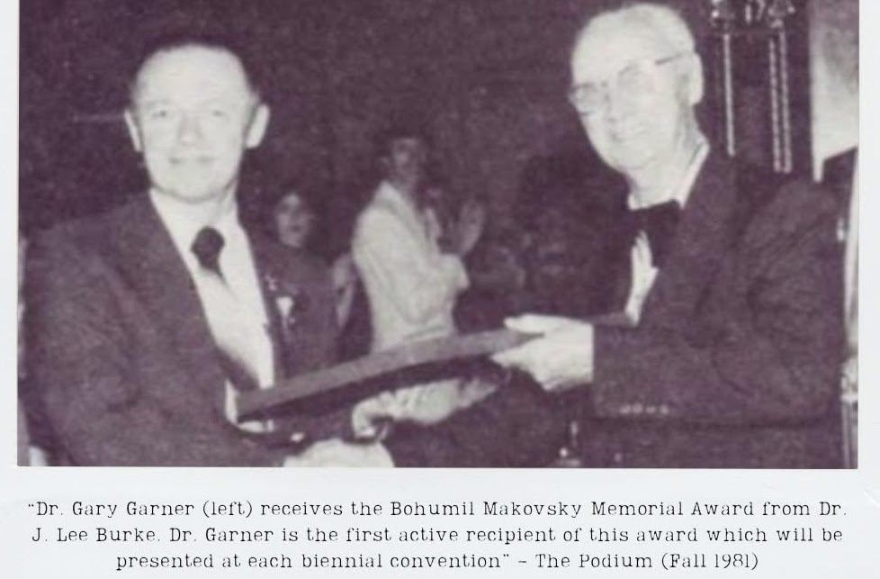

Bohumil Makovsky Memorial Award
- Dr. Gary T. GarnerBohumil Makovsky Memorial Award (1981) · Distinguished Service to Music Medal, Concert Band
- Charles E. “Pop” StrainBohumil Makovsky Memorial Award
“Dr. Gary Garner (left) receives the Bohumil Makovsky Memorial Award from Dr. J. Lee Burke. Dr. Garner is the first active recipient of this award which will be presented at each biennial convention.” The Podium (Fall 1981)